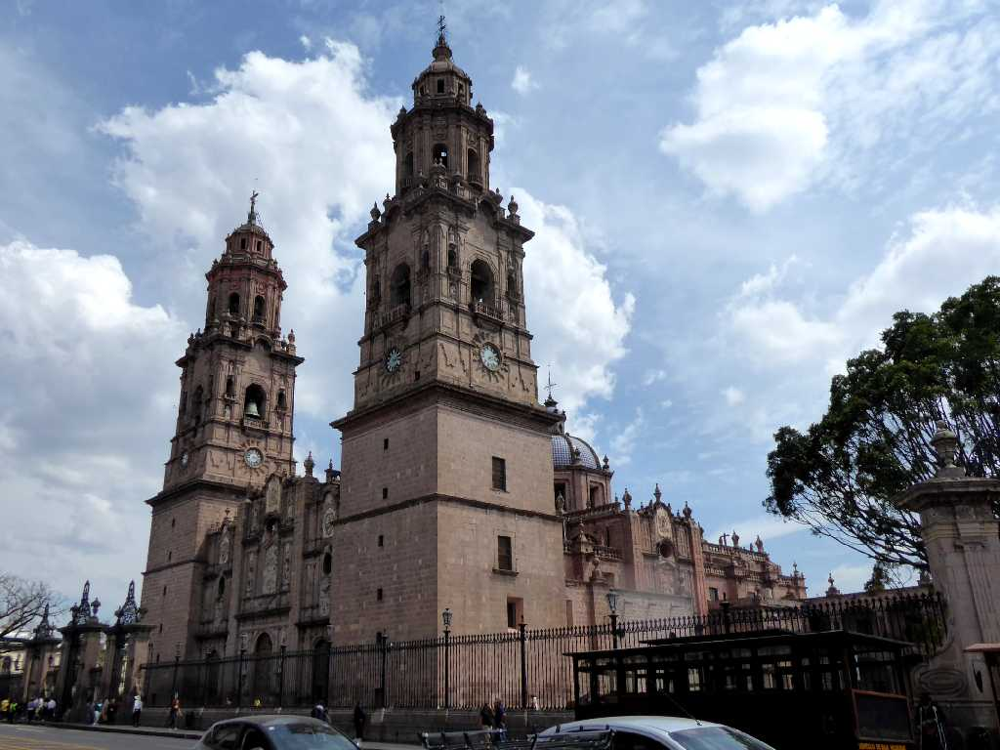
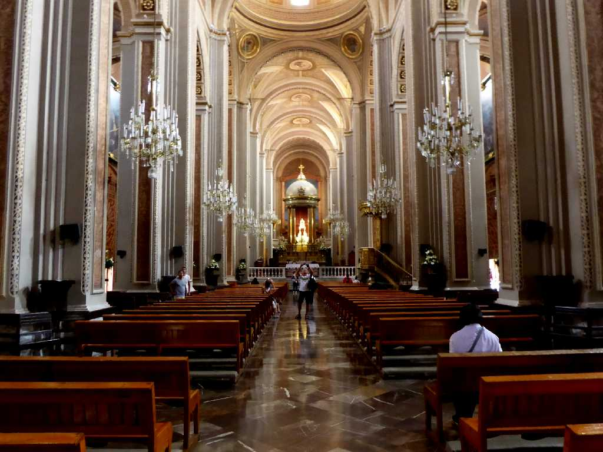
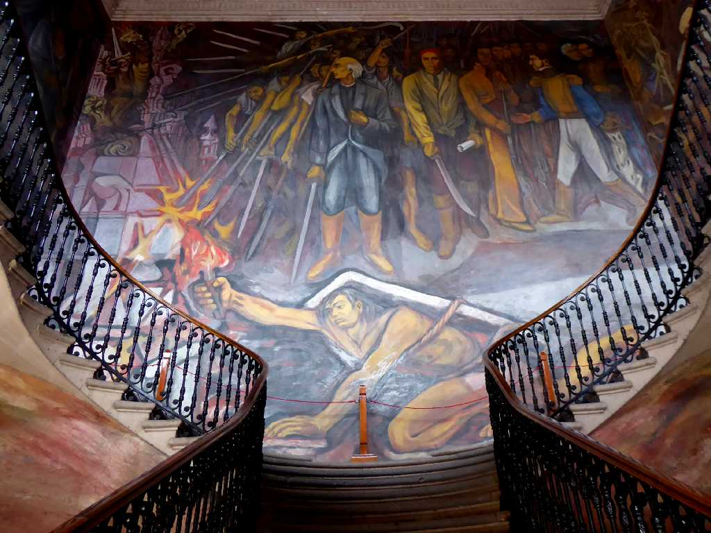
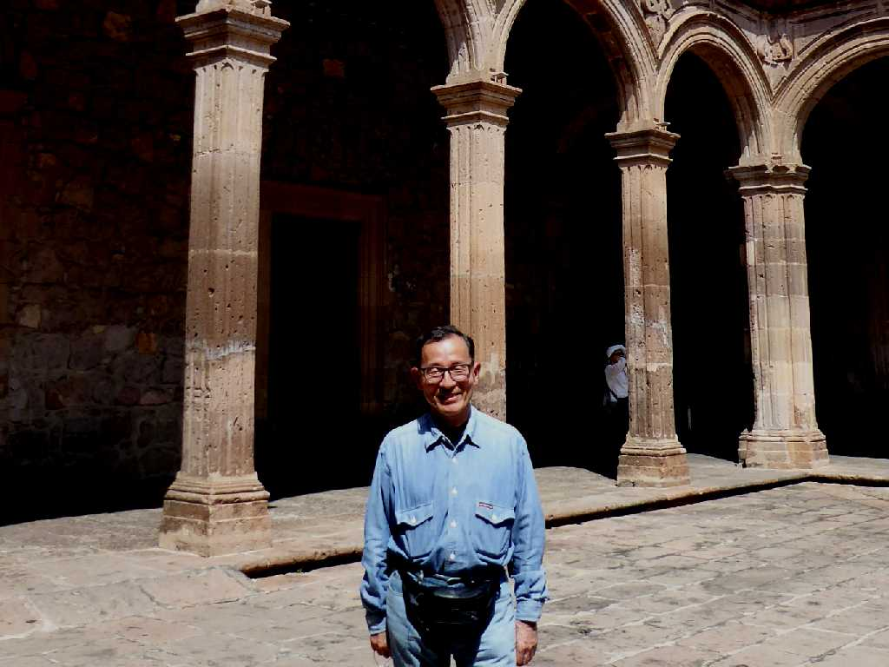
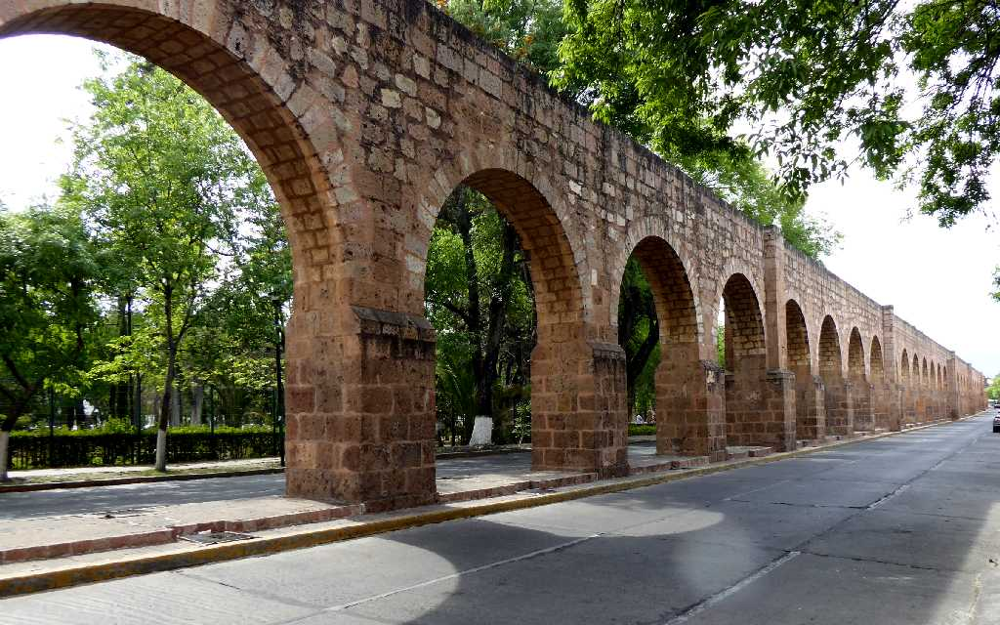

Catedral de Morelia
ソカロ広場に面した１００年を費やし１８世紀に完成した高さ７０ｍの鐘楼２塔を持つバロック様式のモレリア大聖堂

Catedral de Morelia

Palacio de Gobierno Morelia
州庁舎の階段に描かれた壁画 専制政治や奴隷問題に立ち向かうメキシコ独立運動の英雄モレロス

March 8 2020 Palacio de Gobierno Morelia
１８世紀に創られた州庁舎の中庭

Acueducto de Morelia
１８世紀後半に創られたモレリアの水道橋は２５３のアーチ高さ８ｍ長さ１,７００ｍあり１９１０年まで使われていた